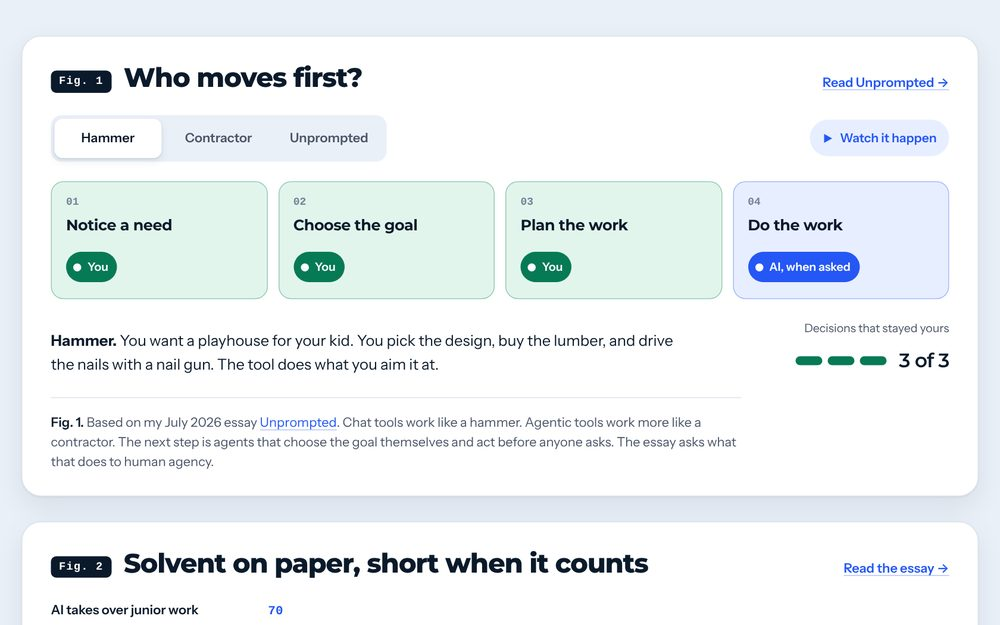
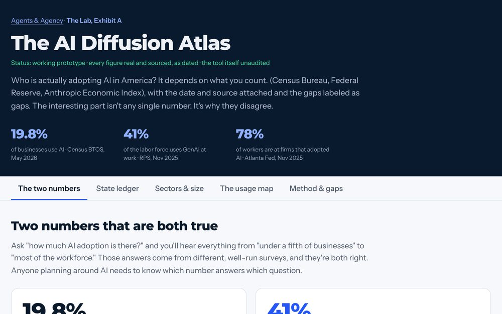
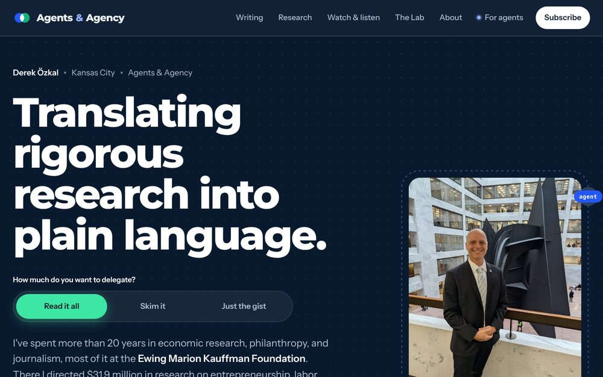
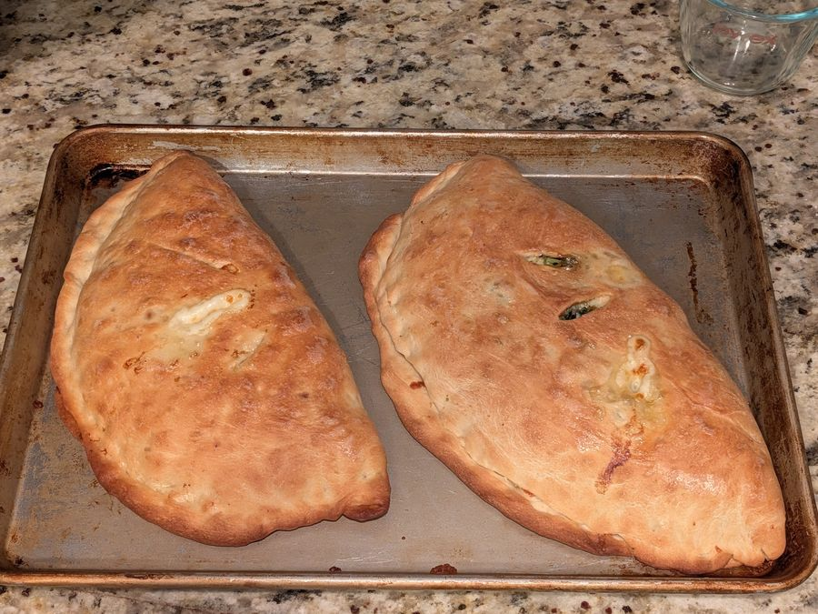
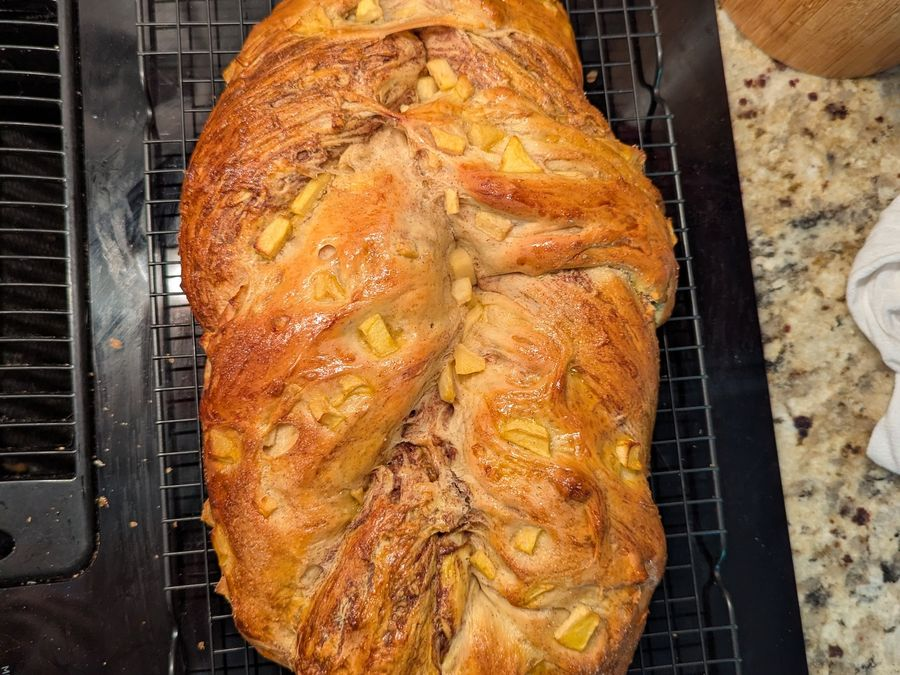

The Lab
I write about AI and work. Here I build with it.
Building is how I check whether the ideas hold up. Everything here is a prototype. Some are tools, some are models, and three are games.
Ground rule: anything marked Prototype is an argument I haven't verified yet. If a number or coefficient looks wrong, tell me in the comments.
AI does the task
Automation. The worker moves on, up, or out. This is the most studied case.
AI helps with the task
Augmentation. The worker gets more done. Most current research and hype sits here.
AI makes new tasks possible
New work that wasn't affordable or possible before. It's barely measured, and most Lab projects sit here.
Exhibits
What's on the bench
Ten exhibits, newest first. Tap one to jump to it, or go straight to the games.
Interactive essays
Three essays turned into small models you can play with: who makes the decisions as AI takes on more, how a profession runs short of judgment, and what a challenger agent says that a flattering one won't. The page also has the site's one agent, which offers to do things you didn't ask for.
Play with the essays

The AI Diffusion Atlas
Who is adopting AI in America, built on published data.
The Legacy Project
Sixty years of foundation history, searchable, with an AI tool on top.
The Expertise Flow Simulator
A toy model of how a profession runs short of judgment.
Jobs that didn't exist in 2022
A running list of work that frontier models made possible.
The Kitchen
Baking with AI as sous-chef. Peer reviewed by my family.

This website
Plain HTML, built with Claude, edited until it sounded like me.

Herd Mentality
Laser unicorns defend a rainbow bridge from the Grumps.

Math Grove
A summer math tutor that grows you a garden.

Directorate
Run a covert agency from 1972 to 2026.
The AI Diffusion Atlas
Who is actually adopting AI in America: businesses, workers, and states, built entirely on published data from the Census Bureau, the Federal Reserve, and the Anthropic Economic Index. The two adoption numbers people quote most (18% of firms, 41% of workers) are both right, and the Atlas shows why they differ.
The Legacy Project
Sixty years of foundation history was sitting in boxes, binders, and file shares that nobody could search. I led 46 volunteers in digitizing it, then helped design an AI research tool integrated with our grant-management software, so the archive answers questions instead of gathering dust.
Staff can use it to pull institutional context in seconds: what we funded, what we learned, what we already tried in 1997. Information retrieval that took days now takes minutes, and the tool opened working capacity and possibilities for staff that didn't exist before.
It also convinced me that the Expertise Encoder role in Exhibit D is real work, because I did a version of it here.
Read the Foundation's story“Led by Derek Ozkal, senior officer, strategic initiatives, RLE”
The Kauffman Foundation, on the project, for its 60th anniversary
The Expertise Flow Simulator
My essay The Liquidity Crisis of Expertise argues that a profession can run out of usable judgment the way a bank runs out of cash: solvent on paper, short when it counts. This simulator turns that claim into a model with three sliders, one profession, and a 25-year horizon.
One profession, 25 years, year 0 = 100
How fast the profession hands cognitive work to models. Speeds up encoding, and quietly starves the junior pipeline.
Deliberate spending on the slow way: juniors doing hard things next to seniors.
How much of a retiring expert's judgment actually survives capture. Less than you'd hope.
How it works, in one breath. Three stocks: judgment held by working seniors, judgment captured into systems, and the junior pipeline. Retirement drains the first at 5% a year, encoding takes about a decade to mature, and your sliders control the rest. Toys make assumptions visible. If you'd set a coefficient differently, tell me which one and why.
Jobs that didn't exist in 2022
A running list of work that wasn't possible before frontier models, as opposed to old jobs with new tools. Each entry says what the job is and why it couldn't exist earlier. Some have postings today, and some are still hypotheses.
The Kitchen
I spend my working hours on human-AI collaboration, so it seems only fair to disclose my own. These were made by me, with AI as sous-chef for recipes, ratios, and troubleshooting. Peer review was conducted by my family, and the braided cinnamon apple bread got a "revise and resubmit." So I made an apple pie, which went much better.


Findings so far: AI is a good cooking partner. It's patient with basic questions, happy to help at 10 p.m., and wrong about an oven temperature about once per project. Also in the rotation: veggie burgers, stews, and a cheesecake. Methodology shared on request.
This website
The site you're reading is a Lab project too. I wrote it and built it with Claude, then edited until it sounded like me. It's plain HTML files on GitHub Pages, with no framework and no hosting bill.
The Arcade
Three browser games built with AI. All are free, need no account, and work on a phone.
Herd Mentality
A herd of laser-horned unicorns defends a rainbow bridge from the Grumps, an army of gray clouds. Drag to steer, shoot gates to raise their numbers, and run through the better one. A Grump you hit floats away happy. Bosses include The Monday and Per My Last Email. Levels don't end, and progress saves in your browser.
Play Herd MentalityMath Grove
A summer math tutor built for my daughters and open to anyone. Solve problems, earn coins, and grow a garden that's all yours. Two grade bridges, entering 3rd grade and entering 6th grade, each with 8 topics and 3 tiers. Clear all three tiers to earn a star. There's also a bonus Snake game played inside the garden you grew. No account, no ads, saves in your browser.
Open Math GroveDirectorate
Run a covert agency across four eras, 1972 to 2026. Build headquarters, work field leads, solve conspiracies before they execute, and manage global tension. Eight minigames feed a strategy layer. Influenced by some of my favorite games as a kid, like Covert Action, SimCity, Conflict, and Age of Empires II. One sitting, no save state.
Open DirectorateNext on the bench
On deck
- In development
The Translation Bench
One research finding, written accurately for five audiences: a scholar, a legislator, a founder, a journalist, and a neighbor. It's a tool version of the translation work I've done by hand for twenty years.
- Sketching
The Apprenticeship Protocol
A structured loop where a junior, a senior, and a model each improve the others' work, so the model doesn't quietly replace the middle of the career ladder. The simulator above keeps pointing to this kind of fix.